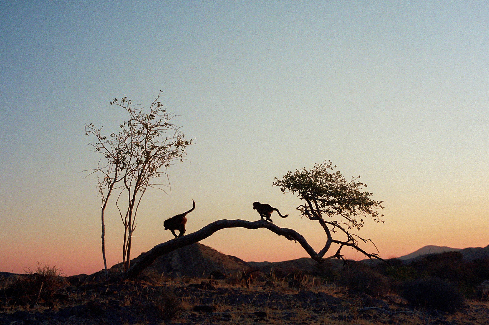

Publications
Current Research
Personality and Relationships in animal Social Networks
In many social species, after observing animals engage in dyadic interactions for some time, it becomes evident that substantial variation exists across individuals and dyads. Certain individuals are very sociable, certain pairs of animals are never observed together.
To study the structure of this variation, behavioural ecologists take different approaches. A very popular one, in primatology at least, is to focus on social relationships. Latent (i.e., unobserved) relationships are assumed from observed behaviours, and invoked as their cause. Let’s take the example of Chantal and Jeanne, two Cercopithecine monkeys. They groom each other all day long, are found feeding in the same spots, and regularly sleep as one, large, furry ball. This is reasonable evidence for a social bond between them – one that resembles, in many ways, a human friendship.
Another viewpoint is taken by a certain group of behavioural ecologists studying animal personality. Their perspective on sociality is largely individual-centred: in essence, they assume that much of the variation in social behaviours can be explained by inter-individual differences. This is, in my opinion, quite reasonable. Many features – neuroendocrine, cognitive, etc. – are indeed clustered by individual. And for this reason, individuals can be expected to show overall differences in general levels of sociability.
Both relationships and personalities are not visible, though. They are latent, abstract constructs, that behavioural ecologists infer from observable behavioural data. This is a first general problem. Another, related, difficulty stems from the fact that the link between the concepts of relationship and personality is unclear. Are relationships something “on top” of personality, that cannot be explained by personality alone? Or are individual social tendencies a consitutive part of what a relationship is? It is also common for behavioural ecologist to aggregate social behaviour data at the level of the individual and to call it “relationship”. Relationships with whom? With everyone. With anyone.
These gaps are what my PhD attempts to address: the gaps between the concept of personality, the concept of social relationship, and the data they’re both inferred from. I am trying to build a unifying framework such that different definitions of personality and relationship can all co-exist inside a commensurable, unambiguous, framework.
To do that, I am building upon a statistical model initially developed in psychology: the Social Relations Model. This model is a somewhat scarier version of a generalised multilevel model – the workhorse of contemporary behavioural ecology. The Social Relations Model assumes that the observed variation in any social behaviour (you can think of the number of grooming bouts from Chantal to Jeanne) can be decomposed into three major pieces. First, how much the actor generally tends to give across partners – that is, Chantal grooming “generosity”. Second, how much the receiver tends to receive, once again, across partners – Jeanne’s “popularity”. And third, how much of the observed grooming bouts is due to the special relationship between them. That is, how much is not due to their respective, individual, tendencies.
The idea is to connect these individual and dyadic parameters to the concepts of personality and relationships, such that they can be used to measure them. I will soon begin to test the Social Relations Model, to evaluate some of its limitations, and to ground it into Causal Inference. Then, after the summer of 2023, it will be time for the concepts and the technique to merge.

Past projects
Sociality and injuries in baboons
In social primates, more socially connected individuals live longer, healthier, lives. In this project, I tried to uncover mechanisms linking sociality and health. Using long-term data, I analysed how different measures of sociality were associated with incidence and healing of injuries, in chacma baboons. Regarding injury incidence, the results suggested that different dimensions of sociality were associated with both health costs and benefits. However, healing rate were not clearly predicted by sociality.
I worked on this project with Alecia J. Carter, at the University College London, in collaboration with the Tsaobis Baboon Project.


Effects of predation risk on animal personality
I designed and implemented a mesocosm experiment, examining whether and how environmental change — more specifically, variation in predation risk — could affect personality in sticklebacks. Many of the strengths of this project were methodological. The fish were living in highly realistic semi-natural ponds, resembling their natural habitat. Moreover, we used an automated tracking technology (RFIT/PIT) to perform the behavioural tests directly in the animals’ ponds, in presence of their conspecifics.
I worked on this project at the University of Groningen, in the research groups of Franjo Weissing, Marion Nicolaus (Sticklelab) and Ton Groothuis, closely with Jakob Gismann and Apu Ramesh.